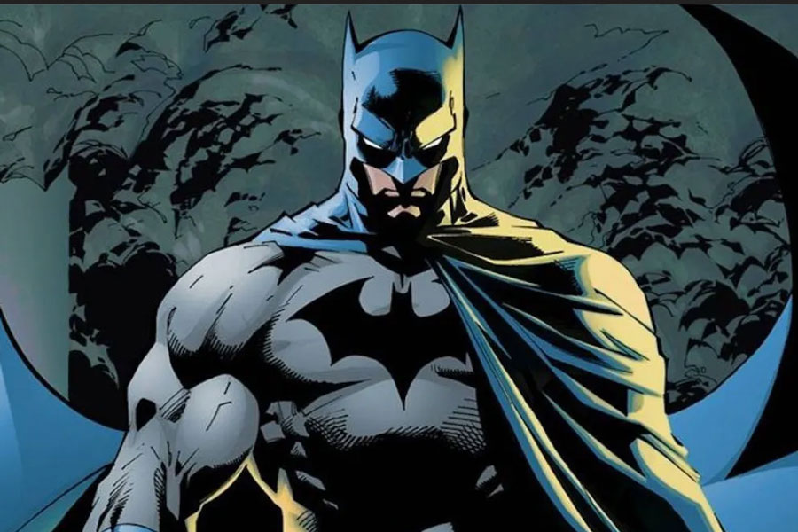

Bienvenidos a la pagina de equipo de comics sin nombre
introduccion a DC comics

DC comics es una marca de comics fundada en 1934 formada por warner bros.
como no nos vamos a entrar en detalle
sobre DC comics vamos a hablar sobre los superheroes de esa marca.
Superman
vamos a empezar por algo bastante famosillo, Superman! el tipico superheroe que puede volar, lanza rayos por los ojos, tiene la misma fuerza o mayor que hulk
pero le tiene una muy fuerte debilidad a la cryptonita, un mineral que para una persona normal sera un mineral de otro planeta pero para Superman no lo debe ni mirar porque eso lo debilita.
Batman

batman no es un superheroe como tal porque no tiene ningun superpoder, ha impartido justicia solo con sus inventos como el batarang, el batmobil, etc... cuando se ilumina la batseñal en el cielo noctuirno
el estara ahi para proteger
ahora te introducimos a los 2 villanos mas populares de todo el universo de DC
ten en cuenta de que no son todos los villanos de DC, al igual que no todos todos los superheroes de DC van a estar en esta pagina, para eso tienen una
wiki de todo el universo de DC
para que tengan mas contexto y mas informacion sobre todos los superheroes y villanos de DC
EL JOKER
el joker o tambien conocido como joker es el iconico villano de DC que todo el mundo conoce